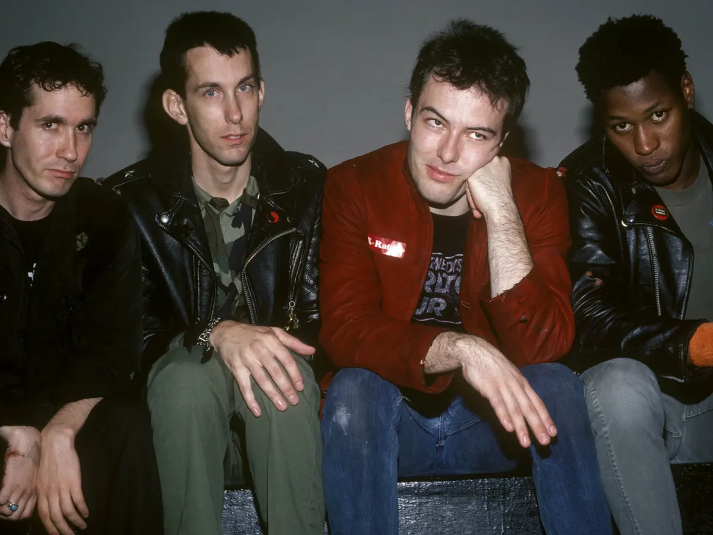

Queen is een Britse rockband, hoe heet de zanger van Queen?
In de intro van de TV-show “Charmed” hoor je een cover van een nummer genaamd ‘How Soon Is Now’. Van welke band is het originele nummer?
Hoeveel leden had de popgroep ABBA?
De band Musical Youth bracht in 1982 het nummer 'Pass the Dutchie’ uit. Waar gaat dit nummer over?
Maak deze songtekst van Belinda Carlisle af: ''Ooh, baby, do you know what that's worth?''
Door welke muziek duo is het nummer 'I'm gonna be (500 miles)' geschreven?
Wie heeft het nummer "Love Shack” uitgebracht?
Maak deze songtekst van Culture Club af: “Loving would be easy if your colors were like my dreams”
Welke gothic rock band heeft het nummer 'Just Like Heaven' uitgebracht?
Hoe heet het meet succesvolle nummer van Rick Astley?
Jaren 80
De jaren 80 hebben onze fantastische nummers gebracht zoals Fast Car van Tracy Chapman,
Livin On A Prayer van Bon Jovi en Wake Me Up Before You Go van Wham! Maakt niet uit wat
je muziek smaak is in de jaren 80 is voor iedereen iets te vinden.
